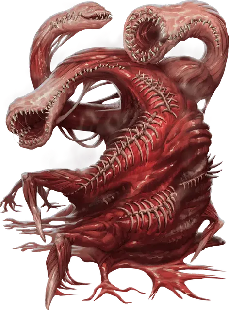

Шмат плоти
Flesh Meld
Огромная Аберрация, хаотично-злая

Класс Доспеха 12
Хиты 95 (10к12 + 30)
Скорость 30 футов, лазая 30 футов
| мод | спас | ||
|---|---|---|---|
| СИЛ | 21 | +5 | +8 |
| ЛОВ | 14 | +2 | +5 |
| ТЕЛ | 17 | +3 | +3 |
| мод | спас | ||
|---|---|---|---|
| ИНТ | 7 | −2 | −2 |
| МДР | 13 | +1 | +1 |
| ХАР | 5 | −3 | −3 |
Иммунитет к состояниям ослепление, сбивание с ног
Чувства слепое зрение 60 футов (слеп за пределами этого радиуса), пассивное Восприятие 11
Языки понимает все языки, но не говорит
Опасность 7 (2900 опыта)
Бонус мастерства +3
Особенности
Аморфный. Шмат плоти может проходить через пространство шириной до 1 дюйма, не протискиваясь.
Аура Смерти. В начале каждого хода шмат плоти каждое существо в пределах 5 футов от него должно преуспеть в спасброске Телосложения Сл 15, иначе оно получит 3 (1к6) урона некротической энергией и будет отравленно до начала следующего хода шмата плоти.
Сопротивление магии. Шмата плоти совершает с преимуществом спасброски от заклинаний и прочих магических эффектов.
Паучье лазанье. Шмат плоти может взбираться по сложным поверхностям, включая потолки, без необходимости проверки характеристики.
Действия
Мультиатака. Шмат плоти совершает две атаки Укусом.
Укус. Рукопашная атака оружием: +8 к попаданию, досягаемость 30 футов, одна цель. Попадание: 16 (2к10 + 5) колющего урона и если целью является существо Большого или меньшего размера, оно схвачено (Сл спасброска 15) и притягивается на расстояние до 15 футов к шмату плоти.
Бонусные действия
Поглотить существо. Шмат плоти нацелевается на одно существо Большого или меньшего размера в пределах 5 футов от себя, которое оно держит в захвате. Цель должна преуспеть в спасброске Ловкости Сл 15, иначе она будет проглочена шматом плоти. Шмат плоти может проглотить одно существо за раз.
Проглоченное существо больше не захвачено. При проглатывании оно становится ослеплённым и опутанным, имеет полное укрытие от атак и других эффектов вне шмата плоти и получает 10 (3к6) урона некротической энергией в начале каждого хода шмата плоти. Если этот урон снижает хиты проглоченного существа до 0, существо умирает, а шмат плоти поглощает его тело.
Если шмат плоти получает 30 или более урона за один ход от проглоченного существа, он должнен преуспеть в спасброске Телосложения Сл 15 в конце этого хода, иначе извергнет существо, и оно упадёт ничком в пространстве, в пределах 5 футов от шмата. Если шмат плоти умирает, проглоченное существо больше не опутанно им и может выбраться из трупа за 10 футов своего движения и падая при выходе ничком.
Описание
Хлюпая и дрожа от ненасытного голода, шмат плоти представляет собой неуклюжее соединение зубов, крови и частей тела. Извилистые отростки крови, каждый из которых заканчивается скрежещущей пастью, кусают добычу, прежде чем втянуть жалких существ в ядро шмата плоти. Запах смерти окружает шмат плоти.
Когда существо поглощается шматом плоти, разум существа сливается с сознанием шмата плоти. Более устойчивые умы могут бороться с этой ассимиляцией, но разум неизбежно уступает диссонирующему хору мыслей об убийстве и пожирании.